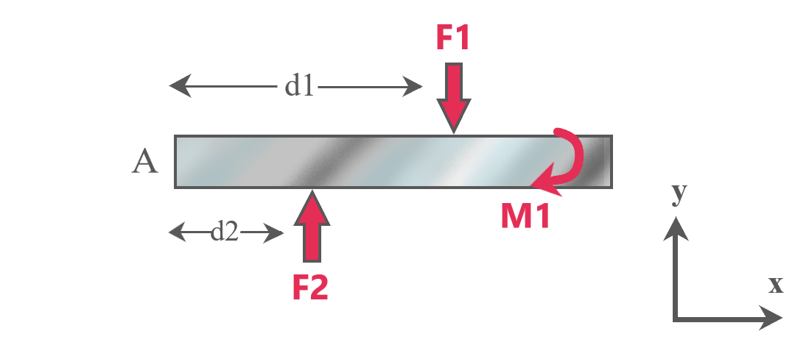

The third condition for equilibrium in two dimensions is that the sum of all the moments (about the z axis)on the body
must be zero i.e.
Mz=0
The z axis is perpendicular to the x-y plane and here, is considered to be coming out of the plane of the screen
By convention, anticlockwise moment is considered positive and clockwise moment, negative.

On applying the equation for the given diagram, we get:
- - (F1)(d1) + (F2)(d2) - M1 = 0